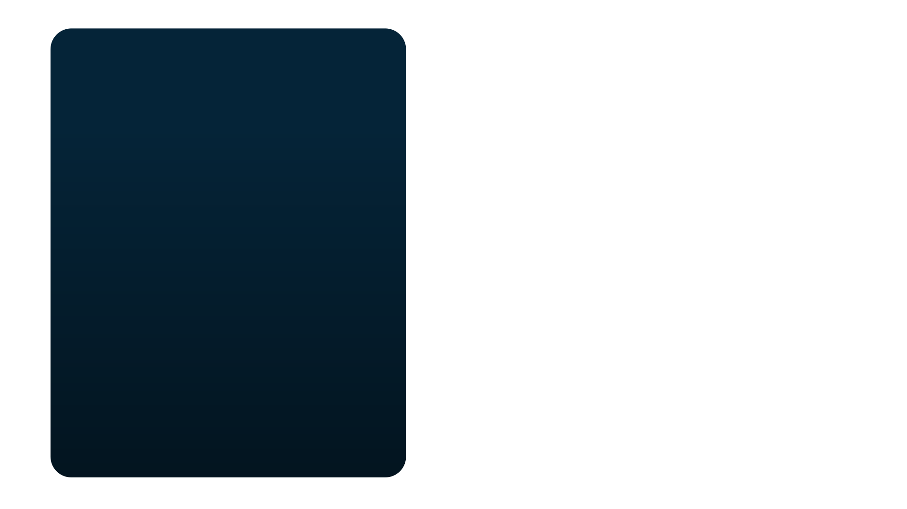
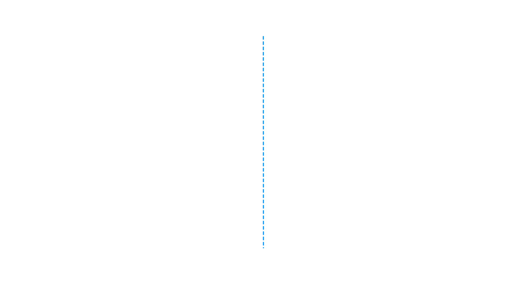
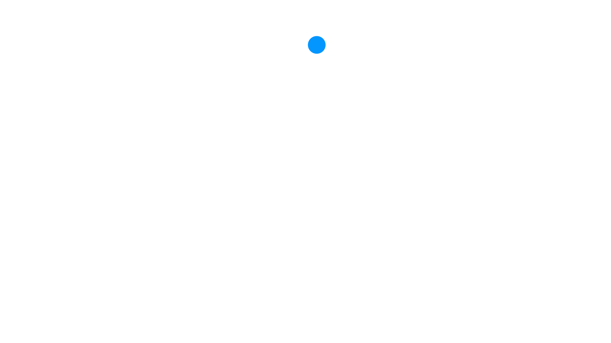

<!DOCTYPE html>
<html lang="en">
<head>
  <meta charset="UTF-8">
  <title>5 Points — 1 Subtopic</title>
  <link href="https://api.fontshare.com/v2/css?f[]=satoshi@400,500,700&display=swap" rel="stylesheet">
  <link href="https://fonts.googleapis.com/css2?family=Inter:wght@400;500;700&display=swap" rel="stylesheet">
  <style>
    * { margin: 0; padding: 0; box-sizing: border-box; }
    html, body, #root {
      width: 100%; height: 100%; overflow: hidden;
      background: #0a0a0a;
      font-family: 'Satoshi', -apple-system, BlinkMacSystemFont, 'Helvetica Neue', Arial, sans-serif;
    }
  </style>
</head>
<body>
  <div id="root"></div>

  <script crossorigin src="https://unpkg.com/react@18/umd/react.development.js"></script>
  <script crossorigin src="https://unpkg.com/react-dom@18/umd/react-dom.development.js"></script>
  <script src="https://unpkg.com/@babel/standalone/babel.min.js"></script>

  <script type="text/babel">
    // ─── Easing + helpers ────────────────────────────────────────────────────
    const Easing = {
      linear:         t => t,
      easeInOutQuad:  t => t < 0.5 ? 2*t*t : 1 - Math.pow(-2*t + 2, 2) / 2,
      easeOutCubic:   t => 1 - Math.pow(1 - t, 3),
      easeInOutCubic: t => t < 0.5 ? 4*t*t*t : 1 - Math.pow(-2*t + 2, 3) / 2,
      easeInOutQuint: t => t < 0.5 ? 16*t*t*t*t*t : 1 - Math.pow(-2*t + 2, 5) / 2,
      easeOutBackSubtle: t => {
        const c1 = 0.6, c3 = c1 + 1;
        return 1 + c3 * Math.pow(t - 1, 3) + c1 * Math.pow(t - 1, 2);
      },
    };
    const clamp = (v, a, b) => Math.max(a, Math.min(b, v));
    const animate = ({ from = 0, to = 1, start = 0, end = 1, ease = Easing.easeOutCubic }) => t => {
      if (t <= start) return from;
      if (t >= end)   return to;
      return from + (to - from) * ease((t - start) / (end - start));
    };

    const TimelineContext = React.createContext({ time: 0, duration: 30 });
    const useTime = () => React.useContext(TimelineContext).time;

    // ─── Library icon (graphic.svg from /Video_Templates/Icon Library) ───────
    // Default Oxford Blue outline (#052438) is swapped to Platinum Blue
    // (#E6ECF2) so the line-art reads against the dark navy panel; the pie
    // chart accent (#0496FF, Dodger Blue) is preserved.
    const PANEL_ICON_SVG = `<svg xmlns="http://www.w3.org/2000/svg" viewBox="0 0 512 512" width="100%" height="100%" fill="#E6ECF2">
<g>
  <path style="fill:#0496FF;" d="M171.444,116.068c-52.688,0-95.553,42.955-95.553,95.754s42.865,95.754,95.553,95.754s95.553-42.955,95.553-95.754S224.133,116.068,171.444,116.068z M244.181,200.819h-61.738v-61.928C214.222,143.689,239.406,168.95,244.181,200.819z M171.444,285.576c-40.558,0-73.553-33.086-73.553-73.754c0-36.92,27.194-67.59,62.551-72.93v72.927c0,6.075,4.925,11,11,11h72.739C238.87,258.29,208.276,285.576,171.444,285.576z"/>
  <g>
    <path d="M501,86.384c6.075,0,11-4.925,11-11v-53.76c0-6.075-4.925-11-11-11H11c-6.075,0-11,4.925-11,11v53.76c0,6.075,4.925,11,11,11h14.778v250.88H11c-6.075,0-11,4.925-11,11v53.759c0,6.075,4.925,11,11,11h234v11.559c-16.232,4.772-28.119,19.825-28.119,37.608c0,21.607,17.549,39.187,39.119,39.187s39.119-17.579,39.119-39.187c0-17.783-11.887-32.836-28.119-37.608v-11.559h234c6.075,0,11-4.925,11-11v-53.759c0-6.075-4.925-11-11-11h-14.778V86.384H501z M273.119,462.189c0,9.477-7.68,17.187-17.119,17.187s-17.119-7.71-17.119-17.187s7.68-17.186,17.119-17.186S273.119,452.713,273.119,462.189z M22,32.624h468v31.76H22V32.624z M490,391.022H22v-31.759h468V391.022z M464.222,337.264H47.778V86.384h416.443V337.264z"/>
    <path d="M305.783,204.889h109.019c6.075,0,11-4.925,11-11v-66.82c0-6.075-4.925-11-11-11H305.783c-6.075,0-11,4.925-11,11v66.82C294.783,199.964,299.708,204.889,305.783,204.889z M316.783,138.068h87.019v44.82h-87.019V138.068z"/>
    <path d="M305.783,251.339h109.019c6.075,0,11-4.925,11-11s-4.925-11-11-11H305.783c-6.075,0-11,4.925-11,11S299.708,251.339,305.783,251.339z"/>
    <path d="M414.802,273.578H305.783c-6.075,0-11,4.925-11,11s4.925,11,11,11h109.019c6.075,0,11-4.925,11-11S420.877,273.578,414.802,273.578z"/>
  </g>
</g>
</svg>`;

    function InlineSVG({ svg, style }) {
      return <div style={style} dangerouslySetInnerHTML={{ __html: svg }} />;
    }

    // ─── Stage ───────────────────────────────────────────────────────────────
    function Stage({ width = 1920, height = 1080, duration = 30, background = '#E6ECF2', children }) {
      const [time, setTime]       = React.useState(0);
      const [playing, setPlaying] = React.useState(true);
      const [scale, setScale]     = React.useState(1);
      const stageRef = React.useRef(null);
      const rafRef   = React.useRef(null);
      const lastTs   = React.useRef(null);

      React.useEffect(() => {
        const measure = () => {
          if (!stageRef.current) return;
          const w = stageRef.current.clientWidth;
          const h = stageRef.current.clientHeight - 52;
          setScale(Math.max(0.05, Math.min(w / width, h / height)));
        };
        measure();
        const ro = new ResizeObserver(measure);
        ro.observe(stageRef.current);
        window.addEventListener('resize', measure);
        return () => { ro.disconnect(); window.removeEventListener('resize', measure); };
      }, [width, height]);

      React.useEffect(() => {
        if (!playing) { lastTs.current = null; return; }
        const step = (ts) => {
          if (lastTs.current == null) lastTs.current = ts;
          const dt = (ts - lastTs.current) / 1000;
          lastTs.current = ts;
          setTime(t => {
            let next = t + dt;
            if (next >= duration) next = next % duration;
            return next;
          });
          rafRef.current = requestAnimationFrame(step);
        };
        rafRef.current = requestAnimationFrame(step);
        return () => cancelAnimationFrame(rafRef.current);
      }, [playing, duration]);

      React.useEffect(() => {
        const onKey = (e) => {
          if (e.code === 'Space') { e.preventDefault(); setPlaying(p => !p); }
          else if (e.code === 'ArrowLeft')  setTime(t => clamp(t - (e.shiftKey ? 1 : 0.1), 0, duration));
          else if (e.code === 'ArrowRight') setTime(t => clamp(t + (e.shiftKey ? 1 : 0.1), 0, duration));
          else if (e.key === '0') setTime(0);
        };
        window.addEventListener('keydown', onKey);
        return () => window.removeEventListener('keydown', onKey);
      }, [duration]);

      return (
        <div ref={stageRef} style={{ position: 'absolute', inset: 0, display: 'flex', flexDirection: 'column', background: '#0a0a0a' }}>
          <div style={{ flex: 1, display: 'flex', alignItems: 'center', justifyContent: 'center', overflow: 'hidden', minHeight: 0 }}>
            <div style={{ width, height, background, position: 'relative', transform: `scale(${scale})`, transformOrigin: 'center', flexShrink: 0, boxShadow: '0 20px 60px rgba(0,0,0,0.4)', overflow: 'hidden' }}>
              <TimelineContext.Provider value={{ time, duration }}>
                {children}
              </TimelineContext.Provider>
            </div>
          </div>
          <PlaybackBar time={time} duration={duration} playing={playing} onPlayPause={() => setPlaying(p => !p)} onReset={() => setTime(0)} onSeek={setTime} />
        </div>
      );
    }

    function PlaybackBar({ time, duration, playing, onPlayPause, onReset, onSeek }) {
      const trackRef = React.useRef(null);
      const [drag, setDrag] = React.useState(false);
      const pct = duration > 0 ? (time / duration) * 100 : 0;
      const fmt = (t) => {
        const m = Math.floor(t / 60), s = Math.floor(t % 60), cs = Math.floor((t * 100) % 100);
        return `${m}:${String(s).padStart(2,'0')}.${String(cs).padStart(2,'0')}`;
      };
      const seek = (e) => {
        const r = trackRef.current.getBoundingClientRect();
        onSeek(clamp((e.clientX - r.left) / r.width, 0, 1) * duration);
      };
      React.useEffect(() => {
        if (!drag) return;
        const up = () => setDrag(false);
        const mv = (e) => seek(e);
        window.addEventListener('mouseup', up); window.addEventListener('mousemove', mv);
        return () => { window.removeEventListener('mouseup', up); window.removeEventListener('mousemove', mv); };
      }, [drag]);
      const btn = { width: 28, height: 28, display:'flex', alignItems:'center', justifyContent:'center', background:'rgba(255,255,255,0.04)', border:'1px solid rgba(255,255,255,0.1)', borderRadius:6, color:'#f6f4ef', cursor:'pointer', padding:0 };
      const mono = 'ui-monospace, SFMono-Regular, monospace';
      return (
        <div style={{ display:'flex', alignItems:'center', gap:12, padding:'8px 16px', background:'rgba(20,20,20,0.92)', borderTop:'1px solid rgba(255,255,255,0.08)', width:'100%', maxWidth:680, alignSelf:'center', borderRadius:8, color:'#f6f4ef', fontFamily:'Inter,system-ui,sans-serif', userSelect:'none', flexShrink:0 }}>
          <button onClick={onReset} title="Return to start" style={btn}>
            <svg width="14" height="14" viewBox="0 0 14 14" fill="none"><path d="M3 2v10M12 2L5 7l7 5V2z" stroke="currentColor" strokeWidth="1.5" strokeLinejoin="round" strokeLinecap="round"/></svg>
          </button>
          <button onClick={onPlayPause} title="Play/pause (space)" style={btn}>
            {playing ? (<svg width="14" height="14" viewBox="0 0 14 14" fill="none"><rect x="3" y="2" width="3" height="10" fill="currentColor"/><rect x="8" y="2" width="3" height="10" fill="currentColor"/></svg>) : (<svg width="14" height="14" viewBox="0 0 14 14" fill="none"><path d="M3 2l9 5-9 5V2z" fill="currentColor"/></svg>)}
          </button>
          <div style={{ fontFamily:mono, fontSize:12, fontVariantNumeric:'tabular-nums', width:64, textAlign:'right' }}>{fmt(time)}</div>
          <div ref={trackRef} onMouseDown={(e)=>{setDrag(true);seek(e);}} style={{ flex:1, height:22, position:'relative', cursor:'pointer', display:'flex', alignItems:'center' }}>
            <div style={{ position:'absolute', left:0, right:0, height:4, background:'rgba(255,255,255,0.12)', borderRadius:2 }}/>
            <div style={{ position:'absolute', left:0, width:`${pct}%`, height:4, background:'#0496FF', borderRadius:2 }}/>
            <div style={{ position:'absolute', left:`${pct}%`, top:'50%', width:12, height:12, marginLeft:-6, marginTop:-6, background:'#fff', borderRadius:6, boxShadow:'0 2px 4px rgba(0,0,0,0.4)' }}/>
          </div>
          <div style={{ fontFamily:mono, fontSize:12, fontVariantNumeric:'tabular-nums', width:64, color:'rgba(246,244,239,0.55)' }}>{fmt(duration)}</div>
        </div>
      );
    }

    // ─── Scene constants (measured directly from the supplied PNGs) ──────────
    const TITLE_FONT = "'Inter', -apple-system, BlinkMacSystemFont, 'Helvetica Neue', Arial, sans-serif";
    const BODY_FONT  = "'Satoshi', -apple-system, BlinkMacSystemFont, 'Helvetica Neue', Arial, sans-serif";

    // Pill_Base.png card graphic: x=1065..1819, y=76..233 (centre 1442, 154).
    const PILL_SRC_LEFT = 1065;
    const PILL_SRC_TOP  = 76;
    const PILL_SRC_CX   = 1442;
    const PILL_SRC_CY   = 154;
    const CARD_W = 755;
    const CARD_H = 158;

    // Frame_01 places the five card centres on these y values.
    const CARD_CYS = [139, 340, 540, 740, 940];

    // Tick_Base.png blue circle: centred at (995, 141), 56×56.
    const TICK_SRC_CX = 995;
    const TICK_SRC_CY = 141;
    // Tick.png white check: x=981..1008, y=133..151 (within the same 1920×1080).
    const TICK_GLYPH_LEFT  = 981;
    const TICK_GLYPH_RIGHT = 1008;

    // Milestone centres line up vertically with the cards.
    const TICK_CYS = [141, 339, 540, 740, 941];

    // Spine assets share x=993..997, y=136..940 — top of milestone 1 down to milestone 5.
    const SPINE_X         = 995;
    const SPINE_TOP_Y     = 136;
    const SPINE_BOTTOM_Y  = 940;
    const SPINE_HEIGHT    = SPINE_BOTTOM_Y - SPINE_TOP_Y;

    // ─── Animation timings (30s total) ───────────────────────────────────────
    // Phase 1: cards fade/scale in sequentially top → bottom; spine draws on.
    const CARD_IN_STAGGER = 0.50;
    const CARD_IN_DUR     = 1.40;        // slower, smoother scale-in
    const SPINE_DRAW_START = 0.50;
    const SPINE_DRAW_END   = 3.80;

    // Storyboard timings (SMPTE → seconds @ 30fps):
    //   Frame_01 0:04:10 → 4.33s   (all cards in, no checks yet)
    //   Frame_02 0:08:15 → 8.50s   (card 1 active, check 1 lit)
    //   Frame_03 0:12:25 → 12.83s  (card 2 active)
    //   Frame_04 0:17:06 → 17.20s  (card 3 active)
    //   Frame_05 0:21:06 → 21.20s  (card 4 active)
    //   Frame_06 0:25:08 → 25.27s  (card 5 active)
    //   Frame_07 0:28:15 → 28.50s  (final state: all checks lit, spotlight off)
    const PEAKS_T = [8.50, 12.83, 17.20, 21.20, 25.27];
    const TRANSIT_DUR     = 2.80;   // long, gentle crossfade between cards
    const SPOTLIGHT_ENTER = 5.20;   // null begins descending into card 1 early
    const SPOTLIGHT_EXIT  = 27.40;  // null leaves card 5
    const SPOTLIGHT_FADE  = 1.80;   // gentle leave transition

    // ─── Spotlight Y model ───────────────────────────────────────────────────
    // easeInOutQuint gives a much gentler arrival/departure than cubic, so the
    // spotlight glides into each card instead of slipping past.
    const SPOTLIGHT_EASE = Easing.easeInOutQuint;
    function spotlightY(t) {
      if (t < SPOTLIGHT_ENTER) return -300;
      if (t < PEAKS_T[0]) {
        const p = (t - SPOTLIGHT_ENTER) / (PEAKS_T[0] - SPOTLIGHT_ENTER);
        return -300 + (CARD_CYS[0] - (-300)) * SPOTLIGHT_EASE(clamp(p, 0, 1));
      }
      for (let i = 0; i < PEAKS_T.length - 1; i++) {
        if (t < PEAKS_T[i+1]) {
          const dwellEnd = PEAKS_T[i+1] - TRANSIT_DUR;
          if (t < dwellEnd) return CARD_CYS[i];
          const p = (t - dwellEnd) / TRANSIT_DUR;
          return CARD_CYS[i] + (CARD_CYS[i+1] - CARD_CYS[i]) * SPOTLIGHT_EASE(clamp(p, 0, 1));
        }
      }
      if (t < SPOTLIGHT_EXIT) return CARD_CYS[4];
      const p = clamp((t - SPOTLIGHT_EXIT) / SPOTLIGHT_FADE, 0, 1);
      return CARD_CYS[4] + 400 * SPOTLIGHT_EASE(p);
    }

    // Card focus falls off gradually with distance from the spotlight, so the
    // 1.0 ↔ 1.05 scale and 0.7 ↔ 1.0 opacity changes spread over a long window
    // instead of snapping. NEAR/FAR are in pixels of vertical distance.
    // The smoothstep wrapper ensures the focus enters and leaves with zero
    // velocity at both boundaries, so there's no snap at the start or end of
    // the scale change.
    const FOCUS_NEAR = 20;
    const FOCUS_FAR  = 210;
    const smoothstep = x => x * x * (3 - 2 * x);
    function cardFocus(idx, t) {
      const sy = spotlightY(t);
      const dist = Math.abs(sy - CARD_CYS[idx]);
      if (dist <= FOCUS_NEAR) return 1;
      if (dist >= FOCUS_FAR)  return 0;
      const linear = 1 - (dist - FOCUS_NEAR) / (FOCUS_FAR - FOCUS_NEAR);
      return smoothstep(linear);
    }

    // ─── Left-side icon panel (Icon_Base.png + recoloured library icon) ──────
    // Icon_Base.png solid bbox: x=107..858, y=61..1012 (centre 482, 536).
    const PANEL_CX   = 482;
    const PANEL_CY   = 536;
    const PANEL_ICON_SIZE = 500;     // sits comfortably inside the 752×952 panel

    function IconPanel({ time }) {
      // Soft fade-in alongside Phase 1 so the composition establishes itself
      // before the cards start arriving.
      const opacity = animate({
        from: 0, to: 1,
        start: 0.10, end: 1.00,
        ease: Easing.easeInOutCubic,
      })(time);

      return (
        <div style={{ position: 'absolute', inset: 0, opacity, pointerEvents: 'none' }}>
          
          <div style={{
            position: 'absolute',
            left: PANEL_CX - PANEL_ICON_SIZE / 2,
            top:  PANEL_CY - PANEL_ICON_SIZE / 2,
            width: PANEL_ICON_SIZE, height: PANEL_ICON_SIZE,
          }}>
            <InlineSVG svg={PANEL_ICON_SVG} style={{ width: '100%', height: '100%' }} />
          </div>
        </div>
      );
    }

    // ─── Spine (dotted line + blue progress) ─────────────────────────────────
    function Spine({ time }) {
      // The grey dotted track draws on from the top during Phase 1.
      const drawProg = animate({
        from: 0, to: 1,
        start: SPINE_DRAW_START, end: SPINE_DRAW_END,
        ease: Easing.easeInOutCubic,
      })(time);
      const drawHeight   = SPINE_HEIGHT * drawProg;
      const drawClipBot  = 1080 - (SPINE_TOP_Y + drawHeight);

      // The blue progress line tracks the spotlight's y within the spine.
      const sy        = spotlightY(time);
      const blueRaw   = (sy - SPINE_TOP_Y) / SPINE_HEIGHT;
      const blueProg  = clamp(blueRaw, 0, 1);
      const blueHeight   = SPINE_HEIGHT * blueProg;
      const blueClipBot  = 1080 - (SPINE_TOP_Y + blueHeight);

      return (
        <>
          <div style={{
            position: 'absolute', inset: 0,
            clipPath: `inset(${SPINE_TOP_Y}px 0 ${drawClipBot}px 0)`,
            pointerEvents: 'none',
          }}>
            
          </div>
          <div style={{
            position: 'absolute', inset: 0,
            clipPath: `inset(${SPINE_TOP_Y}px 0 ${blueClipBot}px 0)`,
            pointerEvents: 'none',
          }}>
            
          </div>
        </>
      );
    }

    // ─── Milestone (blue circle + trim-path tick) ────────────────────────────
    function Milestone({ index, time }) {
      const peakT  = PEAKS_T[index];
      const offset = TICK_CYS[index] - TICK_SRC_CY;

      // Circle scales in over a longer window, finishing right at the peak.
      const circleStart = peakT - 0.65;
      const circleEnd   = peakT;
      const circleProg  = clamp((time - circleStart) / (circleEnd - circleStart), 0, 1);
      const circleScale = circleProg > 0
        ? Easing.easeOutBackSubtle(circleProg)
        : 0;

      // The white tick draws while the circle is still scaling — its trim runs
      // concurrently, finishing just after the circle settles.
      const trimStart = peakT - 0.50;
      const trimEnd   = peakT + 0.05;
      const trimProg  = clamp((time - trimStart) / (trimEnd - trimStart), 0, 1);
      const trimEased = Easing.easeInOutCubic(trimProg);
      const tickRevealRight = (1920 - TICK_GLYPH_LEFT)
                            - (TICK_GLYPH_RIGHT - TICK_GLYPH_LEFT) * trimEased;

      // Both layers share the circle's scale so the tick grows with the disc
      // it sits inside, instead of floating at full size over a tiny circle.
      const sharedTransform =
        `translateY(${offset}px) scale(${circleScale})`;
      const sharedOrigin =
        `${TICK_SRC_CX}px ${TICK_SRC_CY}px`;

      return (
        <>
          {/* Blue circle */}
          <div style={{
            position: 'absolute', inset: 0,
            transform: sharedTransform,
            transformOrigin: sharedOrigin,
            opacity: circleProg > 0 ? 1 : 0,
            pointerEvents: 'none',
          }}>
            
          </div>
          {/* White checkmark — trim-path reveal, scaling with the circle. */}
          <div style={{
            position: 'absolute', inset: 0,
            transform: sharedTransform,
            transformOrigin: sharedOrigin,
            clipPath: `inset(0 ${tickRevealRight}px 0 0)`,
            opacity: trimProg > 0 ? 1 : 0,
            pointerEvents: 'none',
          }}>
            
          </div>
        </>
      );
    }

    // ─── Card (Pill_Base + title + description) ──────────────────────────────
    function Card({ index, time }) {
      // Phase 1 — sequential fade/scale-in to baseline (70% opacity, scale 1).
      const inStart = index * CARD_IN_STAGGER;
      const inProg  = clamp((time - inStart) / CARD_IN_DUR, 0, 1);
      const baseScale   = inProg > 0 ? Easing.easeInOutCubic(inProg) : 0;
      const baseOpacity = 0.70 * Easing.easeInOutCubic(inProg);

      // Phase 2/3 — proximity focus (active row scales to 1.05, opacity → 1).
      const focus       = cardFocus(index, time);
      const focusScale  = 1 + 0.05 * focus;
      const focusOpacity = 0.70 + 0.30 * focus;

      // Combine: card finishes its intro then receives focus modulation.
      const settled  = inProg >= 1;
      const drawScale   = settled ? focusScale : baseScale;
      const drawOpacity = settled ? focusOpacity : baseOpacity;

      const cy   = CARD_CYS[index];
      const left = PILL_SRC_LEFT;
      const top  = cy - CARD_H / 2;

      return (
        <div style={{
          position: 'absolute',
          left, top,
          width: CARD_W, height: CARD_H,
          transform: `scale(${drawScale})`,
          transformOrigin: 'center center',
          opacity: drawOpacity,
          pointerEvents: 'none',
        }}>
          {/* Windowed copy of Pill_Base.png so the card graphic lands at (0,0). */}
          <div style={{ position: 'absolute', inset: 0, overflow: 'visible' }}>
            
          </div>

          {/* Title + description, sitting to the right of the gradient square. */}
          <div style={{
            position: 'absolute',
            left: 154,                 // past the blue arrow square
            top: 30,
            right: 24,
            color: '#000000',
            fontFamily: TITLE_FONT,
            fontWeight: 700,
            fontSize: 37,
            letterSpacing: '-0.005em',
            lineHeight: 1.1,
            whiteSpace: 'nowrap',
          }}>
            Title {index + 1}
          </div>
          <div style={{
            position: 'absolute',
            left: 154,
            top: 86,
            right: 24,
            color: '#707070',
            fontFamily: BODY_FONT,
            fontWeight: 400,
            fontSize: 33,
            letterSpacing: '-0.005em',
            lineHeight: 1.2,
            whiteSpace: 'nowrap',
          }}>
            This is an example of a sentence {index + 1}
          </div>
        </div>
      );
    }

    // ─── Scene ───────────────────────────────────────────────────────────────
    function Scene() {
      const t = useTime();
      return (
        <div style={{ position: 'absolute', inset: 0, background: '#E6ECF2', overflow: 'hidden' }}>
          {/* Left-side dark panel with the recoloured library icon. */}
          <IconPanel time={t} />

          {/* Spine sits behind the cards. */}
          <Spine time={t} />

          {/* Cards. */}
          {[0, 1, 2, 3, 4].map(i => <Card key={`c${i}`} index={i} time={t} />)}

          {/* Milestones sit on top of the spine, beside the cards. */}
          {[0, 1, 2, 3, 4].map(i => <Milestone key={`m${i}`} index={i} time={t} />)}
        </div>
      );
    }

    function App() {
      return (
        <Stage width={1920} height={1080} duration={30} background="#E6ECF2">
          <Scene />
        </Stage>
      );
    }

    ReactDOM.createRoot(document.getElementById('root')).render(<App />);
  </script>
</body>
</html>
